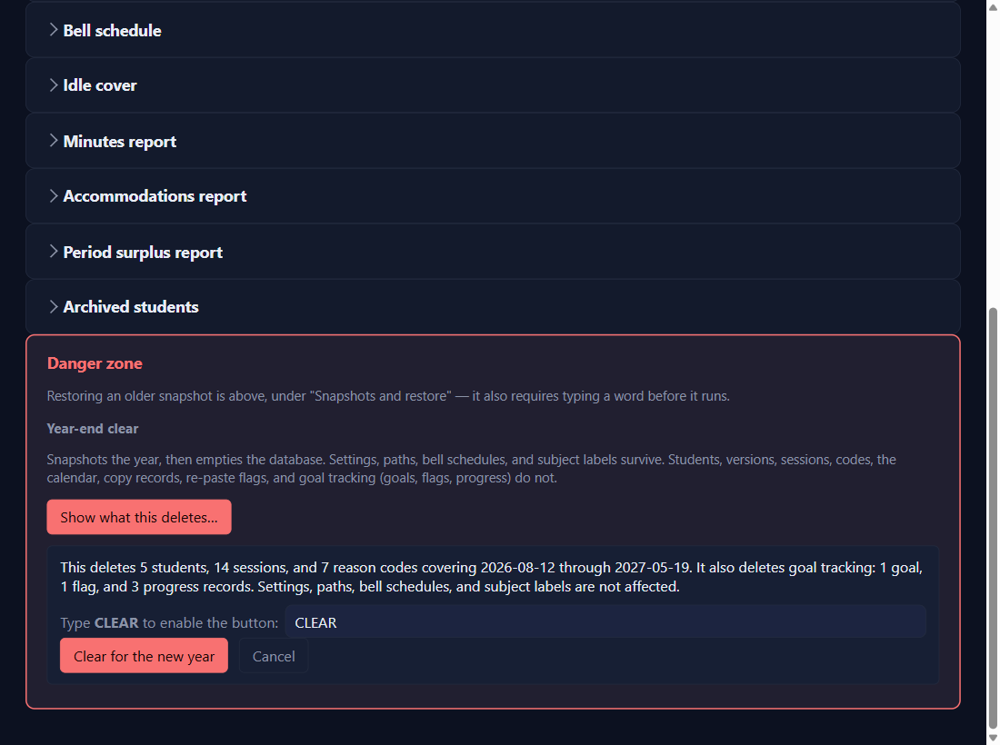

Keep it safe
August year-end
⏱ About 10 minutes, plus re-adding students🔁 Once a yearYou need: next year's empty service log and roster
Why: a new school year starts empty: no students, no calendar. Your settings, bell schedule, subject labels, and imported lessons stay. Re-adding students one at a time is deliberate: it catches anyone who left but was never removed.
1
Back up to Google Drive first
Do Back up to Drive. That copy is last year, kept.
2
Settings → Danger zone → Show what this deletes…
It states the real numbers: students, sessions, codes, and goal tracking.

3
Type CLEAR, click Clear for the new year, and confirm
A backup is taken first, automatically. Under the finished message, a noteNEWfor version 0.4.22 and beyond counts the files in your backup folder and names the …_pre-clear.db file just saved: it holds the whole year, so drag it to Google Drive. Once your logs are turned in you can delete older backups in File Explorer (Open backup folder); the app never deletes them itself.
4
Set up the new year
Load the calendar from the new year's empty service log, check the bell schedule, put the new roster in the Roster folder, and add your students.
✓ You'll know it worked
Cleared for the new year. A snapshot of the old year was taken first.- The period tabs are empty; Settings, lessons, and units are still there.
✕ Avoid these
- Skipping the Drive copy. It's your record of last year.
- Doing it before the year is really over. Paste your last weeks into the service logs first.
⚠ If you see this
The year-end clear did NOT run and nothing was deleted.Nothing was lost. Try again, or ask for help with the reason it gives.